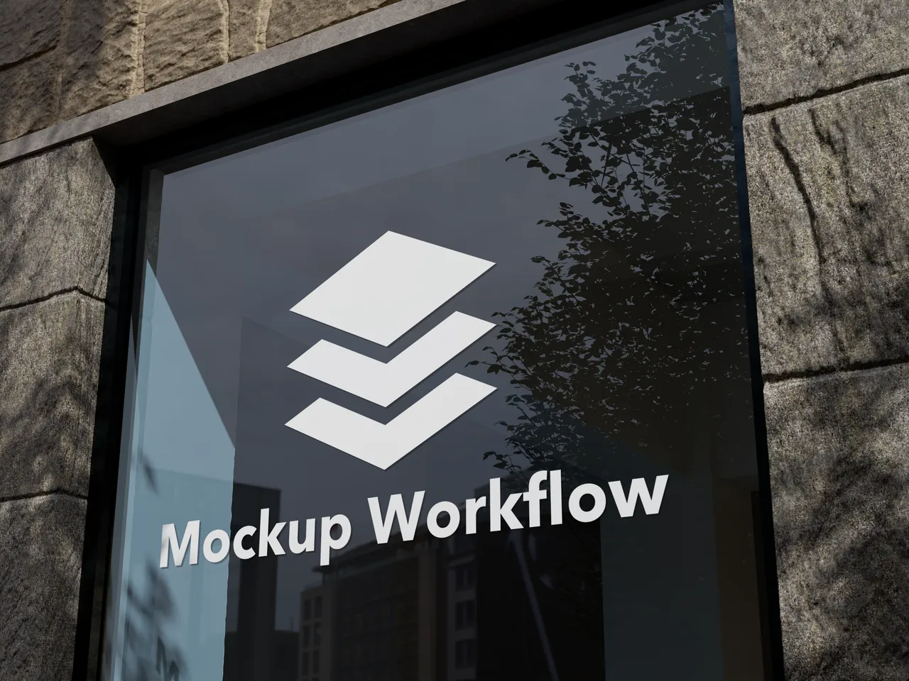
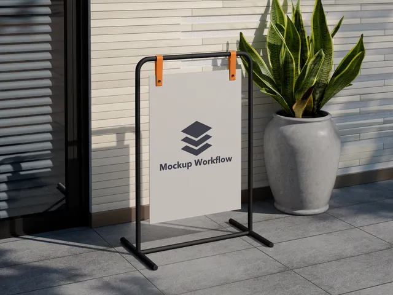
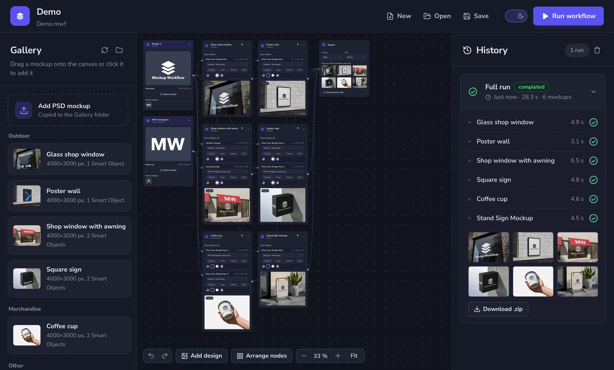
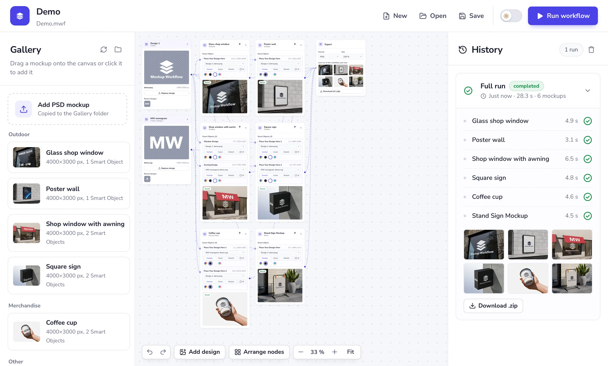

Pick mockups and designs
Choose PSDs from the Gallery and one or more designs. Design 2 goes to each mockup's second Smart Object.
Pick the Photoshop mockups and a logo, PNG or SVG. Mockup Workflow fills every Smart Object and exports the results, without opening Photoshop.
Version 1.0.0, 19 November 2026. Free and open source, MIT license.
Choose PSDs from the Gallery and one or more designs. Design 2 goes to each mockup's second Smart Object.
On the node canvas, set the linked design, the fit, the rotation and a light, dark or original color.
Run workflow renders every mockup. Save PNG or JPG at 100, 50 or 25 %, or everything as a .zip.


Designs on the left, mockups in the middle, the run history with every result on the right. ▶ on a node renders that mockup alone.


The engine reproduces Smart Object perspective and warps, blend modes, masks, Levels, Curves, shadows, glows and blur filters.
Drop in a PNG or an SVG once. SVGs are rasterized at up to 4000 px with their transparency kept.
See the six resultsThe first analysis of a PSD saves a .mockup.json next to it: the aspect ratio, warp, perspective, instances and the full layer list.
It also suggests a logo color from the surface's brightness, a transparent logo or a full-bleed design, and a fit and rotation. Change any of it in the app.
See the node canvasNothing. Mockup Workflow is free and open source under the MIT license.
No. It reads the PSD and renders its Smart Objects itself.
No. The app is for macOS only; built from source it also runs in your browser on a Mac.
No. Everything stays on your Mac: no upload, no account.
Other smart filters, Hue/Saturation, Gradient Map and Arc or Flag warps. The mockup still renders, with a warning in the history.
Save it as a .mwf file, XML with the designs embedded, and open it again or send it on.